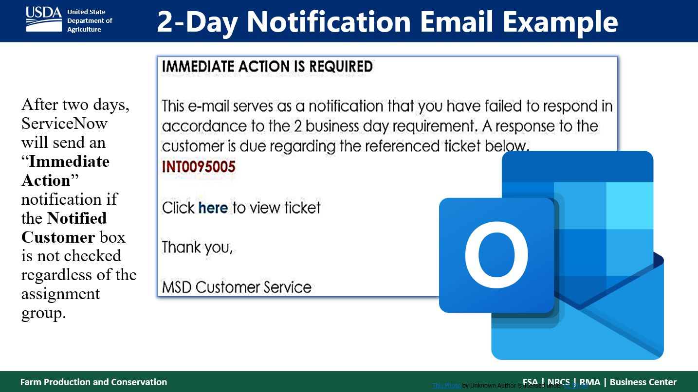
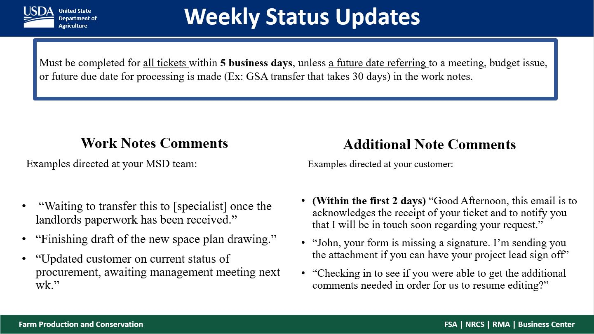

Daily Task Status Updates and Notified Box Check
Below are the expectations of MSD Specilalists that most be completed in SNOW. Based on these expectations you will keep an excel sheet called "Daily Update Check(date)" that y will use as a tool to save you time in knowing what tasks need to be checked or can be revisited within a week if they already updated or you already requested said update.


Now that you are familiar with acceptable examples of meeting the status and notified customer box expectations we'll get into how you can check for those tasks, without having to double over in effort in re-checking already checked tasks, by keeping a living list. Updating this list requires combining new and old data, and sometimes scrubbing out data that is no longer needed. As a result, you will have to switch back and forth between the old report you are updating with new information, and the new information that you are only collecting from. It will be helpful for you to create a folder on your desktop called "Daily Updates" to keep the excel files of the tasks you are updating from day to day.
To start, you will need to export all of the currently ACTIVE Tasks from Service Now, followed by exporting all of the CLOSED TASKS from the previous day. Since this is the first in a while that the Update list is being maintained, all of the tasks will have to be checked. So long as the list is maintained afterwards, the amount of tickets you will have to check will not be as significatlly high. And this is important because MSD at times can have anywhere from 300-600 tickets.